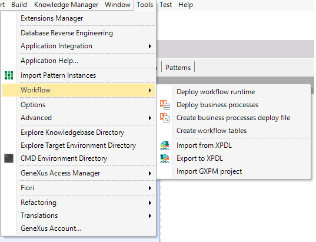

The workflow Tools that are shown in GeneXus IDE are:  The deploy of the workflow application is automatic too. But this option allows you to do it manually. It allows forcing the deploy of the business process diagrams into the database. Through this option, a .bpd file is created. It contains the definition of the business process diagrams to impact in the production database. More Information The workflow tables creation is integrated with Genexus Build. It executes automatically the first time you make a build or run a diagram. Then the creation can be executed manually. Through this option, you can import XPDL diagrams to the Knowledge Base. Through this option, you can export Diagrams to XPDL format. Through this option, you will be able to import GXPM projects to the Knowledge Base.
|
| Backlinks | |
| Toc:GeneXus BPM Suite | |
| GXflow - GAM Integration | HowTo: Deploying a Workflow-based Application |